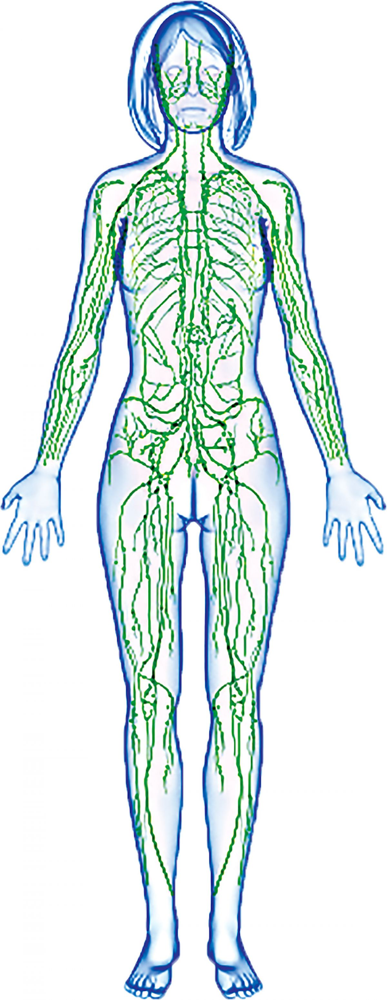

|  | Limfa cirkuliše kroz poseban sistem sudova-limfotok. Limfni kapilari sakupljaju limfu iz tkiva i spajaju se u sve veće limfne sudove, koji se u blizini srca ulivaju u vene. Limfa protiče mnogo sporije od krvi, jer limfni sistem nema pumpu kao što je srce. Cirkulacija limfe zavisi od mišića kroz koje prolaze limfni sudovi-mišići kontrakcijom vrše pritisak na limfne sudove. Limfa teče u jednom smjeru-od tkiva prema srcu, što joj obezbjeđuju zalisci u limfnim sudovima. Na putu limfnih sudova nalaze se limfni čvorovi ili limfne žlijezde, u kojima se proizvodi jedan tip leukocita-limfociti. Limfni čvorovi "prečišćavaju" limfu-uništavaju mikroorganizme iz limfe prije nego što se ona vrati u vensku krv. Otok limfnih čvorova može da ukaže na neku infektivnu bolest. Tada se žlijezde u predjelu pazuha, prepona, ispod uha ili vilica mogu lako napipati. Limfnom sistemu pripadaju i krajnici i slezina. Krajnici predstavljaju grupe limfnih čvorića. Nalaze se u ždrijelu i sadrže limfocite koji nas štite od mikroorganizama. Slezina se nalazi u gornjem, lijevom dijelu trbušne duplje. U slezini nastaju limfociti, razgrađuju se istrošeni eritrociti, a ima i funkciju depoa krvi. |